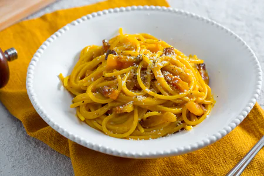

Home
Spaghetti alla carbonara

La pasta alla carbonara è un piatto tipico della tradizione italiana e più in particolare del Lazio,
assurta nel tempo come uno dei simboli culinari della città di Roma.
Ingredienti
- Spaghetti
- Tuorli
- Pepe Nero
- Guanciale
- Pecorino Romano
Preparazione
- Per preparare gli spaghetti alla carbonara cominciate mettendo sul fuoco una pentola con l’acqua salata per cuocere la pasta. Nel frattempo eliminate la cotenna dal guanciale e tagliatelo prima a fette
- E poi a striscioline spesse circa 1cm
- La cotenna avanzata potrà essere riutilizzata per insaporire altre preparazioni
- Versate i pezzetti di guanciale in una padella antiaderente e rosolate per circa 10 minuti a fiamma medio alta, fate attenzione a non bruciarlo altrimenti rilascerà un aroma troppo forte. Nel frattempo tuffate gli spaghetti nell’acqua bollente
- Cuoceteli al dente. Intanto versate i tuorli in una ciotola
- Aggiungete il Pecorino e insaporite con il pepe nero
- Amalgamate il tutto con una frusta a mano , sino ad ottenere una crema liscia.
- Intanto il guanciale sarà giunto a cottura
- Spegnete il fuoco e utilizzando un mestolo prelevatelo dalla padella, lasciando il fondo di cottura all'interno della padella stessa
- Trasferite il guanciale in una ciotolina e tenetelo da parte. Versate una mestolata d’acqua della pasta in padella, insieme al grasso del guanciale.
- Scolate la pasta al dente direttamente nel tegame con il fondo di cottura
- Saltatela brevemente per insaporirla
- Togliete dal fuoco e versate il composto di uova e Pecorino nel tegame. Mescolate velocemente per amalgamare
- Per renderla ben cremosa, al bisogno, potete aggiungere poca acqua di cottura della pasta. Aggiungete il guanciale
- Mescolate un'ultima volta 17 e servite subito gli spaghetti alla carbonara aggiungendo ancora del pecorino in superficie e un pizzico di pepe nero